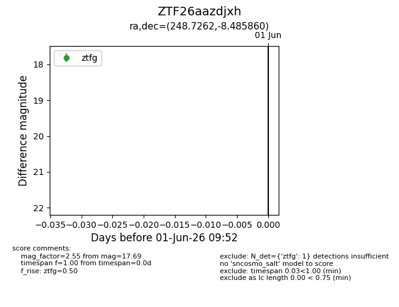
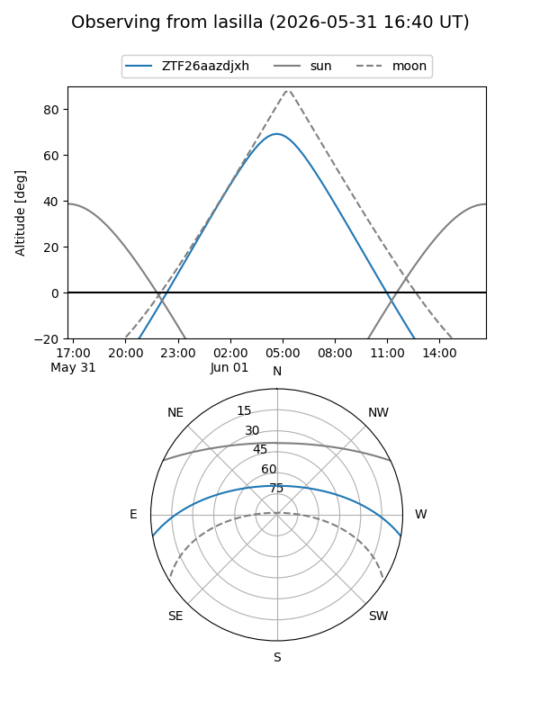
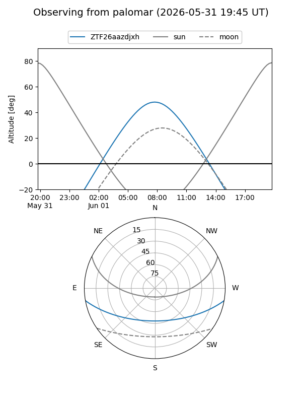

ZTF26aazdjxh
Target ZTF26aazdjxh at 2026-06-01 09:53
Aliases and brokers:
lsst-FINK: link
lsst-Lasair: link
lsst-ALeRCE: link
ztf-FINK: link
ztf-Lasair: link
ztf-ALeRCE: link
alt names
ZTF26aazdjxh (ztf,fink_ztf)
Coordinates:
equatorial (ra, dec) = 248.7262,-8.48586
equatorial (HMS+DMS) = 16:34:54.29,-08:29:09.10
galactic (l, b) = (7.7804,+25.25422)
Flags:
Photometry:
last ztfg=17.69
1 ztfg detections
Lightcurve

Visibility


Additional plots